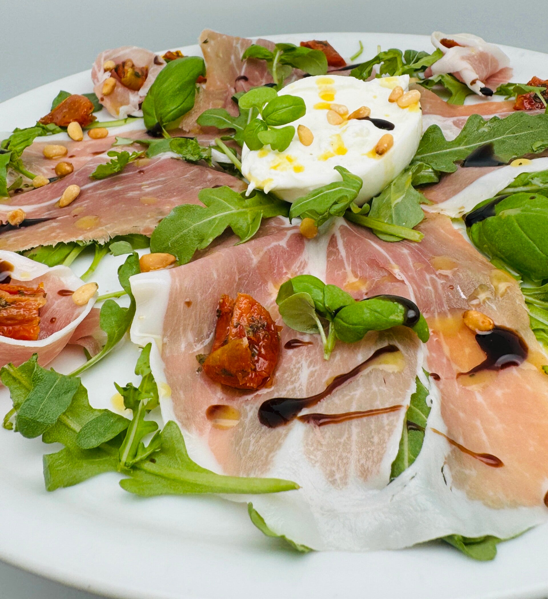
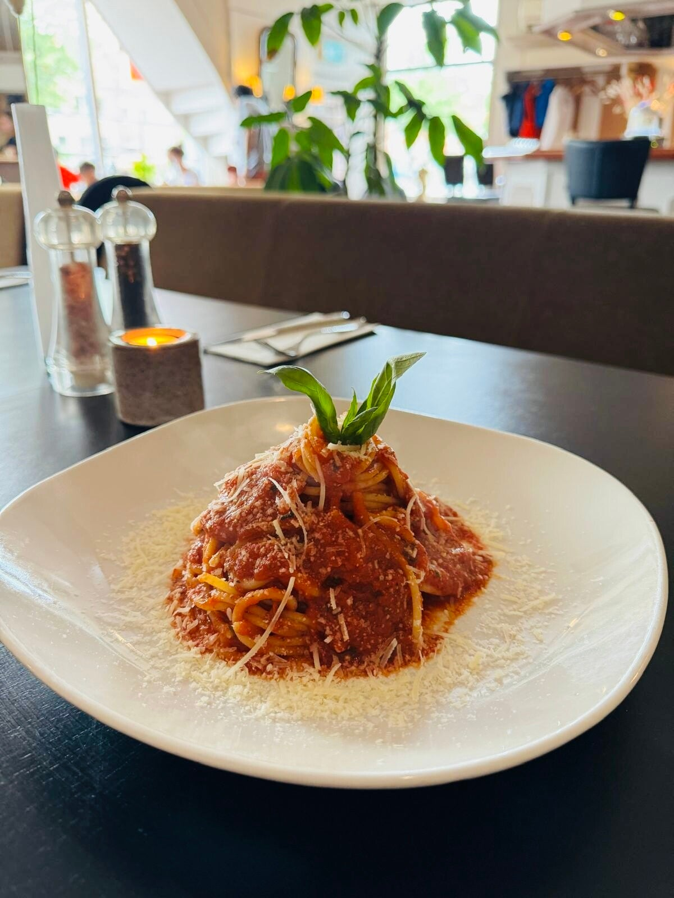
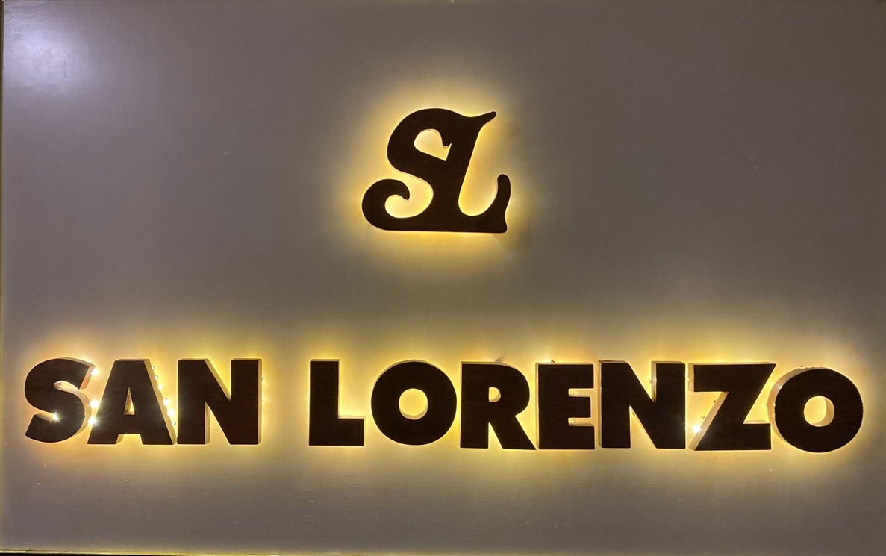
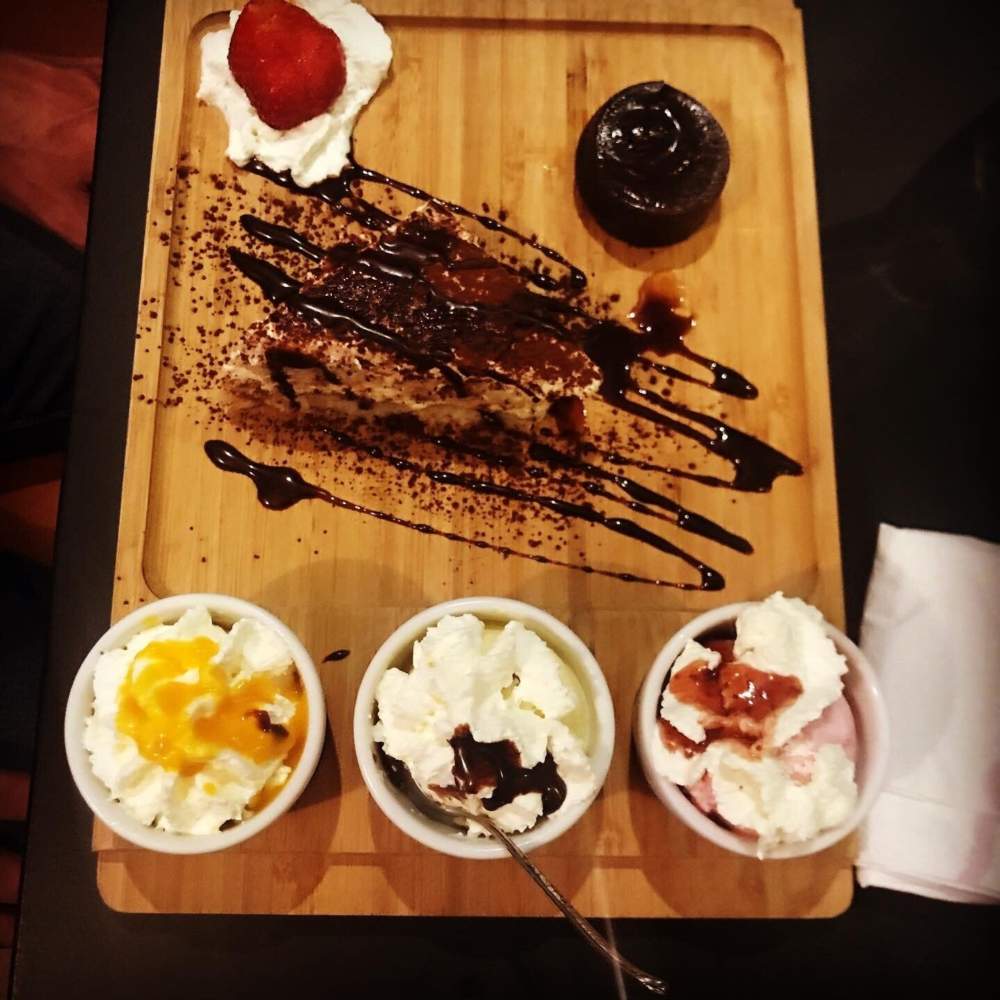

Bestellen en afhalen
Alle gerechten van de kaart zijn af te halen. Bestel online en haal uw bestelling op aan de Leidsevaart, of bel ons.
Italiaans restaurant aan de Leidsevaart, Haarlem
Pizza, pasta en Italiaanse klassiekers, aan tafel of om mee te nemen. Dinsdag tot en met zondag vanaf 17:00.
Liever bellen? 023 - 524 92 55



Restaurant San Lorenzo is gespecialiseerd in de Italiaanse keuken. Een gezellige plek om samen met uw partner, gezin of vrienden te dineren, en een ideale plek voor uw bedrijfs-, personeels- en zakendiners.
Wij serveren een heel uitgebreide menukaart, met diverse vlees-, vis- en vegetarische pizza's. Naast pizza's zijn wij ook gespecialiseerd in verschillende pasta-, vlees- en visgerechten. Voor elk wat wils!

48 uur
We bakken onze pizza na vele uren fermenteren, rusten en rijzen: een proces dat 48 uur voor je eerste hap begint. Tijd is het echte ingrediënt. Elke pizza bakken we zorgvuldig in onze gele koepel.
Onze ingrediënten zijn vers en we proberen een brug te slaan tussen Zuid-Italië en ons thuis hier in Nederland. We geloven in lokale producenten, en houden ook van de zeldzaamheid van bepaalde producten die je alleen op een krokante bodem vindt.
Alle gerechten van de kaart zijn af te halen. Bestel online en haal uw bestelling op aan de Leidsevaart, of bel ons.
Reserveer online een tafel, of bel ons tijdens openingstijden. Met een grotere groep bent u van harte welkom.
Een compleet buffet op maat, met warme of koude gerechten. U kiest zelf een selectie uit onze menukaart. Geef uw wensen tijdig door, dan stellen we het samen met u samen.
Bel voor catering Mail uw wensen
023 - 524 92 55
sanlorenzohaarlem@gmail.com
| Maandag | gesloten |
|---|---|
| Dinsdag | 17:00 - 21:30 |
| Woensdag | 17:00 - 21:30 |
| Donderdag | 17:00 - 21:30 |
| Vrijdag | 17:00 - 21:30 |
| Zaterdag | 17:00 - 21:30 |
| Zondag | 17:00 - 21:30 |